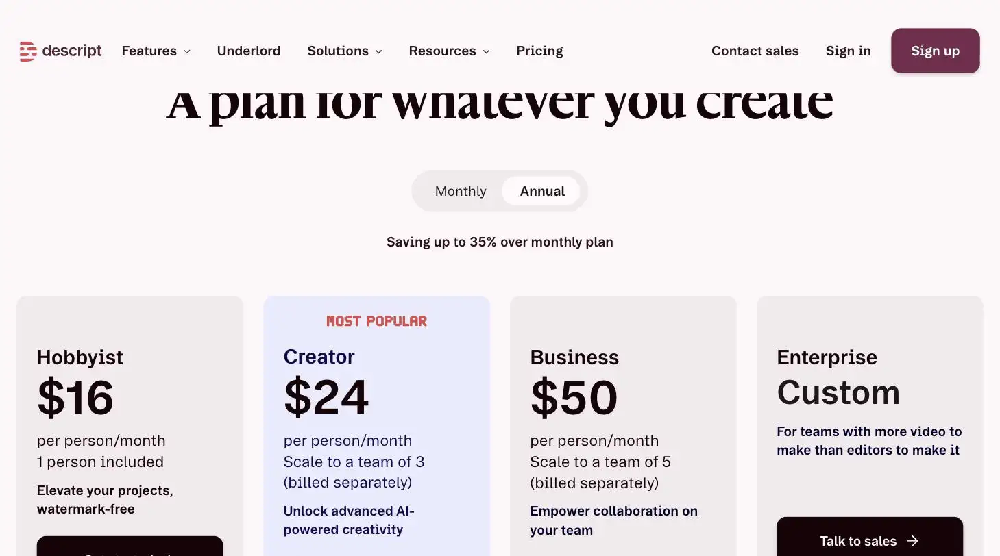
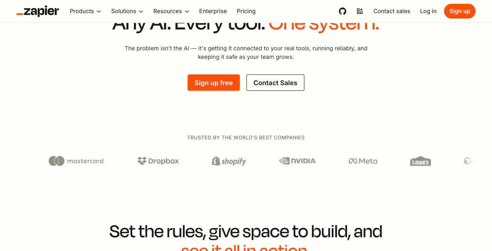

Descript
He'd cut forty 'ums' from the ballad in the time it used to take to find just one.
Descript edits audio and video by editing a text transcript, delete a sentence and the matching clip disappears. Ranked #5 on Solos Gems (7.8/10) and rated Most Powerful, at $16-$35/month it's best for solo podcast, video, and webinar producers working without an editor.
Descript lets you edit video by editing a text document, which sounds like a party trick until you realize you just deleted forty ums in the time it used to take to find the right timestamp.
- Value for price7/10
- Capability9/10
- Ease of use7.5/10
- Trial safety7.5/10

Descript's core trick is editing audio/video by editing a text transcript, delete a sentence in the transcript and the corresponding clip disappears from the timeline. For a solopreneur producing podcast episodes, webinar recordings, or short-form video without an editor, that's a real time saver, not a gimmick.

Descript's core differentiator is editing by transcript text, delete a sentence and the matching audio/video clip disappears from the timeline. Its Underlord AI (shown above) can also clean up filler words and rough cuts automatically.
Example from descript.com. Not independently tested by Solos Gems.Pricing breakdown
- Free: ~60 media minutes/month, 100 one-time AI credits, 720p export with watermark
- Hobbyist: $16/month billed annually ($24/month monthly); ~10 media hours/month, 400 AI credits, 1080p export, no watermark
- Creator: $24/month billed annually ($35/month monthly); ~30 media hours/month, 800 AI credits, 4K export
- Business: $50/month billed annually ($65/month monthly); ~40 media hours/month, 1,500 AI credits, Brand Studio, SLA support
- Enterprise: custom pricing
Two meters, not one
Descript moved to a system with two separate limits: media minutes (how much footage you can process) and AI credits (spent on features like Overdub voice cloning, Studio Sound, and AI-driven edits). It's possible to have plenty of media minutes left and still hit a wall because AI credits ran out first: worth watching closely in your first month before committing to an annual plan.
Pros
- Editing by deleting text is a genuinely faster workflow than timeline scrubbing for talk-heavy content
- Filler-word removal and Studio Sound cleanup handle two of the most tedious parts of solo editing
- One tool covers both podcast and video editing instead of needing separate software
Cons
- AI credits are a second limit on top of media minutes, easy to underestimate usage
- Free and Hobbyist tiers are tight for anyone publishing weekly long-form content
- Business jump from Creator is steep for a one-person operation
Common questions
What are the actual limits on Descript's cheaper plans?
Two separate limits, not one: media minutes and AI credits are tracked independently, so it's easy to underestimate usage by only watching one number. Free and Hobbyist tiers are genuinely tight for anyone publishing weekly long-form content.
Is Descript worth it for a single podcast host?
Yes, it's arguably the closest thing to a one-person production studio on this list. Editing audio and video by editing a transcript covers most of what a solo podcast or video producer needs in one subscription.
When should I upgrade past Creator?
The jump from Creator to Business is steep for a one-person operation, only make it once you've confirmed you're regularly hitting Creator's media-minute or AI-credit limits, not preemptively.